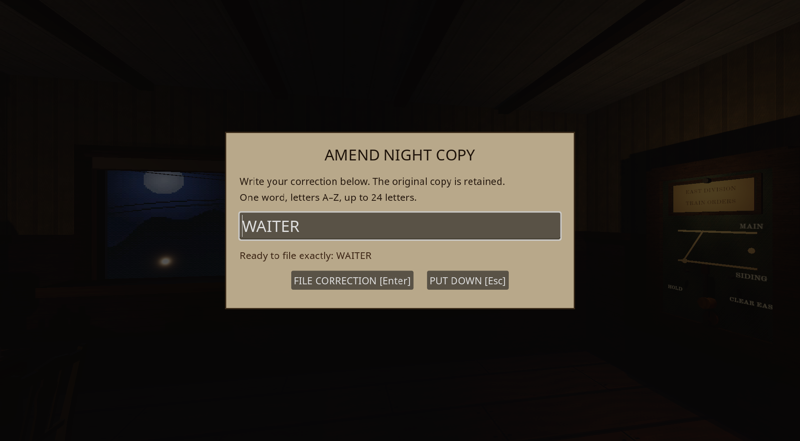
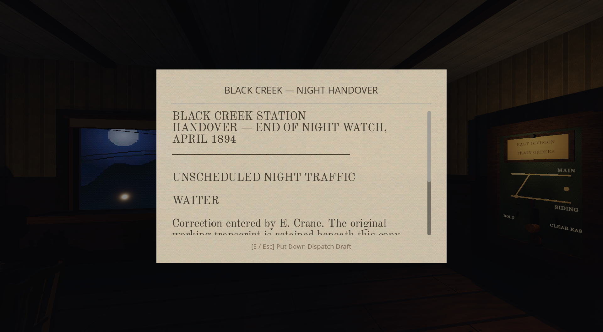
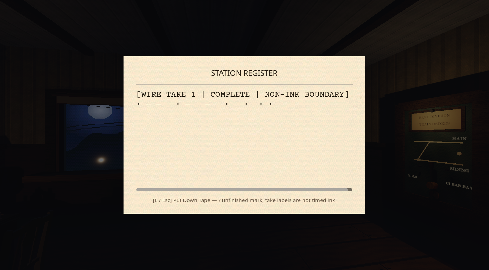

Neutral filing actions, a real typed correction, objective actual-time tape, and acceptance-only routing feedback. Existing art, hand, movement and three-message M1 preserved.
This is an implemented, tested candidate—not a claim of improved fun from human playtesting. Existing shutdown resource and Texture RID leaks remain. Image review is unavailable; visual acceptance is open.
15.53s, 1280×720, 30fps with actual game audio. Godot Movie Maker offline scripted demonstration: hear WATER, inspect the written copy/tape, explicitly enter WAITER, retain WAITER in the handover. It is not real-time performance or novice pacing evidence.



Result and limitations · Full test summary · Windowed evidence · Approved design and decisions
Teach independent verification through safe normal work, give one route a reason to consult the ledger, then measure novice reading/typing/travel times before tuning the30-second filing limit. No new chores or constant jumpscares.